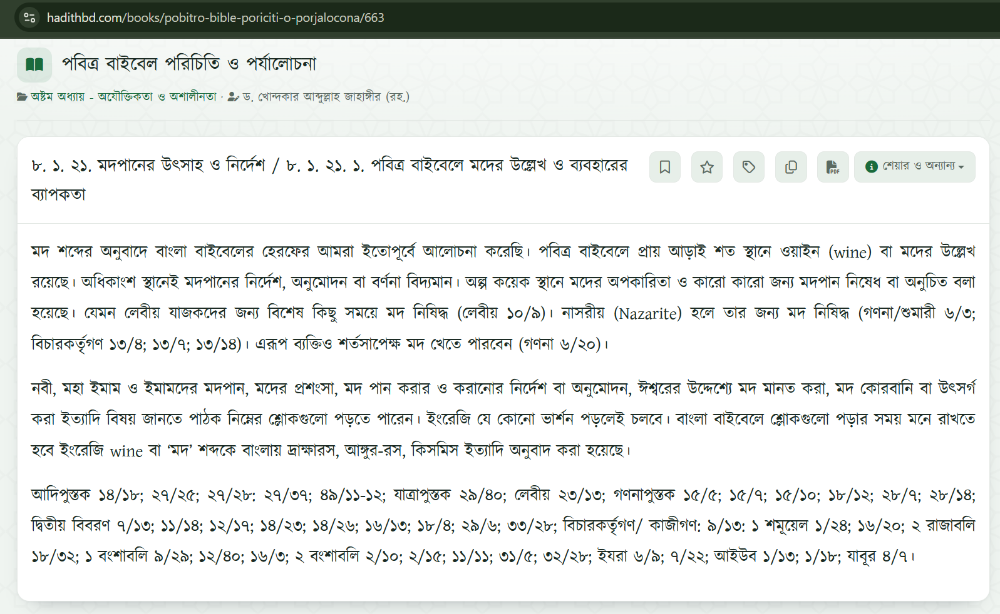

ভূমিকা
"বাইবেল কি পানাহার অনুমোদন করে?" — এই প্রশ্নের উত্তর এক কথায় দেওয়া কঠিন, কারণ বাইবেল মদ্যপানকে একেবারে নিষিদ্ধও করেনি, আবার চোখ বুজে মাতলামিকে প্রশ্রয়ও দেয়নি। বরং বাইবেলের শিক্ষায় দুটি সুর একসঙ্গে বাজে: একদিকে দ্রাক্ষারসকে ঈশ্বরের দেওয়া কল্যাণময় সৃষ্টির অংশ হিসেবে দেখা হয়েছে, অন্যদিকে মাতলামিকে দৃঢ়ভাবে পাপ বলে চিহ্নিত করা হয়েছে। তাই সঠিক প্রশ্নটি আসলে এই — বাইবেল "পান"-কে কীভাবে দেখে আর "মাতলামি"-কে কীভাবে দেখে, এবং এই দুটির মধ্যে সীমারেখা কোথায়।
১. প্রাচীন প্রেক্ষাপট : দ্রাক্ষারস ছিল দৈনন্দিন জীবনের অংশ
বাইবেল লেখা হয়েছে মূলত কৃষিভিত্তিক প্রাচীন সমাজে, যেখানে দ্রাক্ষারস ছিল ফসলের অংশ, উৎসবের সঙ্গী এবং অতিথি-আপ্যায়নের প্রতীক। পুরাতন নিয়মের হিব্রু শব্দ yayin (দ্রাক্ষারস) প্রায় দেড়শ’বারের বেশি এসেছে, আর shekhar (মাদকদ্রব্য/তীব্র পানীয়) শব্দটি এসেছে আলাদাভাবে। প্রাচীন মধ্যপ্রাচ্যে জল সবসময় নিরাপদ ছিল না, তাই দ্রাক্ষারস ছিল সাধারণ পানীয়; অনেক গবেষকের মতে তখনকার দ্রাক্ষারস জল মিশিয়ে হালকা করে পান করা হতো। অর্থাৎ বাইবেলের সময়ের "দ্রাক্ষারস" বোঝা যায় প্রাচীন জীবনেরই এক স্বাভাবিক উপাদান হিসেবে — আজকের হাই-প্রুফ স্পিরিটের সঙ্গে সরাসরি তুলনা করা যায় না।

২. পুরাতন নিয়ম : আশীর্বাদ ও সতর্কবার্তার দ্বৈত সুর
ইতিবাচক দিক। ঈশ্বরপ্রেমে আনন্দ করার কথা বলতে গিয়ে পবিত্র শাস্ত্র নিজেই দ্রাক্ষারসকে উৎসবের অংশ বলে ধরেছে — "তুমি সেই রূপা দিয়ে গরু-ভেড়া, দ্রাক্ষারস ও মাদকদ্রব্য কিনে তোমার ঈশ্বর সদাপ্রভুর সামনে খেয়ে আনন্দ করো" (দ্বিতীয় বিবরণ ১৪:২৬)। গীতসংহিতা ১০৪:১৫-এ দ্রাক্ষারসকে বলা হয়েছে মানুষের হৃদয় আনন্দিত করার জিনিস। আমোস ৯:১৪ ও যিশাইয় ২৫:৬-এ দ্রাক্ষারস আগামী মশীহ-যুগের ভোজের প্রতীক। অর্থাৎ দ্রাক্ষারস নিজে কোনো অশুভ বস্তু নয়; ঈশ্বরের আশীর্বাদের তালিকাতেই সে আছে।
নিষেধের দিক। একই সঙ্গে পুরাতন নিয়ম তিন ধরনের সীমা টেনে দেয় —
- ১. সাধারণ নিষেধ। হিতোপদেশ ২০:১ বলে, "দ্রাক্ষারস উপহাসকারী, মাদকদ্রব্য হুলুস্থুলকারী; যে তার দ্বারা ভ্রান্ত হয়, সে জ্ঞানী নয়।" হিতোপদেশ ২৩:২৯-৩৫-এ মাতালের সেই বিখ্যাত চিত্র — ঝগড়া, ক্ষত, আতুর চোখ, আর "আবার এক পেয়ালা চাই" — অঙ্কিত হয়েছে।
- ২. বিশেষ পদের জন্য নিষেধ। যাজকরা পবিত্র তাঁবুতে সেবার সময় সুরাপান করবে না (লেবীয় ১০:৯); রাজাদের জন্য সতর্কবার্তা আছে, যেন পান করে বিধি ভুলে না যায় (হিতোপদেশ ৩১:৪-৫)।
- ৩. স্বেচ্ছা-নিষেধ। নাসরীয় সন্ন্যাসীরা যে-কোনো দ্রাক্ষাজাত বস্তু থেকে বিরত থাকতেন (গণনা ৬:২-৪) — অর্থাৎ সম্পূর্ণ বিরত থাকার রীতি বাইবেলেরই অংশ।
সুতরাং পুরাতন নিয়মের সারকথা: দ্রাক্ষারস ঈশ্বরের দান, মাতলামি ঈশ্বরের বিরুদ্ধে ভ্রান্তি।
৩. নূতন নিয়ম : যীশু ও পৌলের শিক্ষা
যীশু। কানা বিবাহে যীশু জল থেকে দ্রাক্ষারস তৈরি করেন (যোহন ২:১-১১) — এটি তাঁর প্রথম অলৌকিক চিহ্ন, এবং এতে উৎসবের আনন্দ ও মশীহ-যুগের প্রচুরতার ইঙ্গিত আছে। শেষ ভোজে তিনি দ্রাক্ষারসকে নতুন নিয়মের রক্তের প্রতীক হিসেবে ব্যবহার করেন (মথি ২৬:২৭-২৯)। আবার বিপরীতে, তিনি বলেছেন শিষ্যদের সাবধান হতে — নোহর মতো মাতাল হয়ে আধ্যাত্মিকভাবে ঘুমিয়ে পড়া নয় (লূক ২১:৩৪)। লক্ষণীয়: যীশুর বিরোধীরা তাঁকে "মদ্যপায়ী" বলে উপহাস করেছিল (মথি ১১:১৯) — সেই অপবাদ থেকে বোঝা যায় তিনি সাধারণভাবে দ্রাক্ষারস পান করতেন, কিন্তু মাতাল ছিলেন না। তিনি পান করেছিলেন, তাতে আটকে ছিলেন না।
পৌল। একদিকে তিনি তিমথিয়কে পরামর্শ দেন, "শুধু জল পান না করে তোমার পেটের পীড়া ও ঘন ঘন অসুস্থতার কারণে সামান্য দ্রাক্ষারস ভোগ করো" (১ তিমথিয় ৫:২৩) — অর্থাৎ পরিমিত ও প্রয়োজনভিত্তিক ব্যবহারকে তিনি অনুমোদন করেন। অন্যদিকে তার নৈতিক শিক্ষা স্পষ্ট:
- "দ্রাক্ষারসে মাতাল হইয়ো না, এতে দুর্নীতি আসে; বরং আত্মায় পরিপূর্ণ হও" (ইফিষীয় ৫:১৮)।
- মাতলামি "মাংসের কার্য" তালিকায় আছে, আর এই সব কাজ যারা করে তারা ঈশ্বরের রাজ্যের অধিকারী হবে না (গালাতীয় ৫:১৯-২১; ১ করিন্থীয় ৬:৯-১০)।
- শরীর পবিত্র আত্মার মন্দির (১ করিন্থীয় ৬:১৯-২০) — তাই শারীরিক স্বাধীনতাও দায়িত্বের অধীন।
- স্বাধীনতা ও ভালোবাসার নীতি। "সবই আমার পক্ষে বৈধ, কিন্তু সবই উপকারজনক নয়" (১ করিন্থীয় ৬:১২)। রোমীয় ১৪:১৩-২১ ও ১ করিন্থীয় ৮:৯-১৩-এ পৌল শেখান — যে বিষয়ে নিজের বিবেক পরিষ্কার, তাতেও যদি কোনো দুর্বল বিশ্বাসী ভাই/বোনের পতনের কারণ হয়, তবে ভালোবাসার খাতিরে সেই স্বাধীনতা ব্যবহার না করা ভালো। খ্রিস্টান স্বাধীনতা আত্মকেন্দ্রিক নয়, প্রেম দ্বারা নিয়ন্ত্রিত।
- ১ পিতর ৪:৩-এ মাতলামি-মদ্যপানকে অ-বিশ্বাসীদের পুরনো জীবনযাত্রার অংশ হিসেবে চিহ্নিত করা হয়েছে।
৪. খ্রিস্টীয় ঐতিহ্যে দুই ধারা
একই বাইবেল নিয়ে খ্রিস্টানরা দুটি রীতিতে বেঁচেছে। নিচের তুলনাটি দেখায়, কোন যুক্তিতে কোন ধারা দাঁড়িয়ে আছে:
| ধারা | যুক্তি ও ভিত্তি | যেখানে প্রায়ই দেখা যায় |
|---|---|---|
| পরিমিত ব্যবহারের ধারা | সৃষ্টি ঈশ্বরের দান; যীশুর কানা-বিবাহ ও শেষ ভোজ; ১ তিমথিয় ৫:২৩ | ক্যাথলিক, অর্থোডক্স, অ্যাঙ্গলিকান, লুথারান — ব্যক্তিগত দায়িত্বের শিক্ষা |
| সম্পূর্ণ বিরতির ধারা | মাতলামির বিপদ, দুর্বল ভাইয়ের যত্ন, সাক্ষ্য; নাসরীয় আদর্শ | মেথডিস্ট, ব্যাপটিস্ট, অ্যাডভেন্টিস্ট, সালভেশন আর্মি — মণ্ডলীর নিয়ম হিসেবে সম্পূর্ণ বিরতি |
১৯ শতকের সংযম আন্দোলন (temperance movement) এই বিরতির ধারাকে অনেক মণ্ডলীতে সাধারণ রীতি করে তোলে — বিশেষত যেখানে মদ্যপান ছিল গার্হস্থ্য হিংসা ও দারিদ্র্যের বড় কারণ। অর্থাৎ দুই পক্ষই বাইবেলের অংশবিশেষ তুলে ধরে; কোনো পক্ষই "বাইবেলবিরোধী" নয়।
৫. তবে "অনুমতি" মানে কী? — একটি সূক্ষ্ম পার্থক্য
বাইবেল নিষেধাজ্ঞা-বই নয়, এটা সম্পর্কহীন নিয়মের সংকলন নয়; তার নৈতিক কাঠামো এমন — (ক) ঈশ্বরের দান ভোগ করা যায়, (খ) যা মানুষকে দাস করে, তা ভয়ের বিষয় (১ করিন্থীয় ৬:১২), (গ) ভালোবাসা স্বাধীনতার সীমা। তাই তিনটি স্তর আলাদা করা দরকার:
- ১. মাতলামি — সব সময়, সব পরিস্থিতিতে পাপ; কোনো ব্যাখ্যায় এর অনুমতি নেই।
- ২. পরিমিত পান — বাইবেলগতভাবে নিষিদ্ধ নয়, তবে প্রজ্ঞার বিষয়; নির্ভর করে ব্যক্তি, পরিস্থিতি, বিবেক ও প্রতিবেশীর উপর।
- ৩. স্বেচ্ছা-বিরতি — বাইবেলগতভাবে অত্যন্ত প্রশংসনীয়; প্রেম, সাক্ষ্য ও দুর্বল ভাইয়ের খাতিরে সর্বোচ্চ আত্ম-সংযম।
আমাদের দেশের প্রেক্ষাপটও এখানে প্রাসঙ্গিক: বাংলাদেশে মদ্যপান আইনত নিয়ন্ত্রিত, আর অনেক পরিবার ও যুবসমাজে মাদক-নির্ভরতা বড় সামাজিক ক্ষতি — এই বাস্তবতায় "ভাইয়ের তাগাদে" (রোমীয় ১৪:২১) নীতিটি স্বাভাবিকভাবেই সম্পূর্ণ বিরতির পক্ষে এক শক্ত ভিত্তি দেয়। যে ব্যক্তি ব্যক্তিগতভাবে পরিমিত পানকে বৈধ মনে করেন, তাঁর জন্যও মণ্ডলীগত সাক্ষ্য ও অন্যের বিবেকের প্রতি যত্ন বাধ্যতামূলক থেকে যায়।
উপসংহার
সারসংক্ষেপে: বাইবেল দ্রাক্ষারসের অস্তিত্বকে অস্বীকার করে না, তাকে ঈশ্বরের দান বলে স্বীকার করে; কিন্তু মাতলামিকে কঠোরভাবে পাপ বলে ঘোষণা করে। যীশু ও পৌল উভয়েই পানাহারের দৈনন্দিন বাস্তবতার মধ্যে বেঁচেছিলেন, কিন্তু উভয়েই সংযম ও জাগ্রত থাকার আহ্বান জানিয়েছেন। তাই প্রশ্নের উত্তর "হ্যাঁ" বা "না" নয় — "কীভাবে, কতটা, আর কার খাতিরে?" বাইবেলের নৈতিকতার কেন্দ্রে আত্ম-নিয়ন্ত্রণ, প্রতিবেশীর প্রতি প্রেম ও ঈশ্বরের গৌরবই শেষ কথা (১ করিন্থীয় ১০:৩১)।
টীকা
উপরের শাস্ত্রপদগুলি মূলত ভাবানুযায়ী উদ্ধৃত; পাঠক নিজের ভাষার বাইবেল (যেমন পবিত্র বাইবেল, কমন ল্যাঙ্গুয়েজ) থেকে মিলিয়ে যাচাই করে নিন।